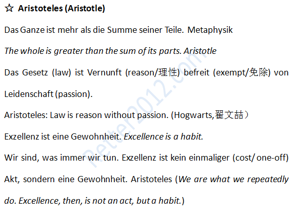

返回主页
亚里士多德

名言佳句（俾斯麦）
Piratenpartei
君子和超人（魔道）
一生中只追求完美
Platon ist mein Freund und Aristoteles auch, meine liebste Freundin aber ist die Wahrheit.
Plato and Aristotle is my friend too, but my dearest friend is the truth. Isaac Newton
2014：奥巴马西点演讲
战舰美利坚号
The New Cold War: China vs Japan
舆论战、心理战、法律战
德国何以获得以色列信任
德语名言：激励奋斗（5）
德语名言：激励奋斗（6）
文摘（战争和航海）
足球世界杯(FIFA World Cup)
“优等民族”考
Aristotle was the mentor of Alexander the Great
Alexander III of Macedon (356 �C 323 BC), commonly known as Alexander the Great , was a king of the Greek kingdom of Macedon. Born in Pella in 356 BC, Alexander succeeded his father, Philip II, to the throne at the age of twenty. He spent most of his ruling years on an unprecedented military campaign through Asia and northeast Africa, until by the age of thirty he had created one of the largest empires of the ancient world, stretching from Greece to Egypt and into present-day Pakistan. He was undefeated in battle and is considered one of history's most successful commanders.
During his youth, Alexander was tutored by the philosopher Aristotle until the age of 16. When he succeeded his father to the throne in 336 BC, after Philip was assassinated, Alexander inherited a strong kingdom and an experienced army. He had been awarded the generalship of Greece and used this authority to launch his father's military expansion plans. In 334 BC, he invaded the Achaemenid empire, ruled Asia Minor, and began a series of campaigns that lasted ten years. Alexander broke the power of Persia in a series of decisive battles, most notably the battles of Issus and Gaugamela. He subsequently overthrew the Persian King Darius III and conquered the entirety of the Persian Empire. At that point, his empire stretched from the Adriatic Sea to the Indus River.
Seeking to reach the "ends of the world and the Great Outer Sea", he invaded India in 326 BC, but was eventually forced to turn back at the demand of his troops. Alexander died in Babylon in 323 BC, the city he planned to establish as his capital, without executing a series of planned campaigns that would have begun with an invasion of Arabia. In the years following his death, a series of civil wars tore his empire apart, resulting in several states ruled by the Diadochi, Alexander's surviving generals and heirs.
Alexander's legacy includes the cultural diffusion his conquests engendered. He founded some twenty cities that bore his name, most notably Alexandria in Egypt. Alexander's settlement of Greek colonists and the resulting spread of Greek culture in the east resulted in a new Hellenistic civilization, aspects of which were still evident in the traditions of the Byzantine Empire in the mid-15th century. Alexander became legendary as a classical hero in the mold of Achilles, and he features prominently in the history and myth of Greek and non-Greek cultures. He became the measure against which military leaders compared themselves, and military academies throughout the world still teach his tactics.
version:1.0; jobnet@188.com © retter2012.com